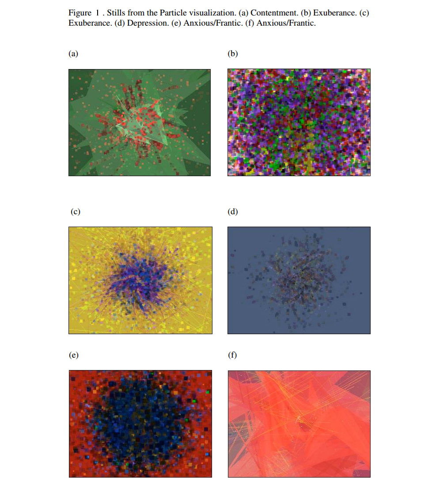

User Interaction and Perception from the Correlation of Dynamic Visual Responses
Melinda Piper | 42634375
View the report in PDF form here: PDF
Abstract:
This paper explores the variant dynamic visualisations found in interactive installations and how they affect user interaction and perception through correlation to the interface and additional functional outputs. It will be presented in the context of assessing future developmental ideas for the MozART project, created by students at The University of Queensland, and will explore a range of research concepts which could be applied in a continuation of the project.
MozART is a physical interactive computing project which was designed to encourage exploration of musical creativity through the application of a tangible spandex screen, acting as a musical instrumental device for controlling musical output through interactivity. Pushing upon the spandex material enables interactivity, with this action being detected through a Microsoft Kinect depth sensor and results in the generation of musical and visual outputs. Essentially behaving as a musical instrument through the digital augmentation and attenuation of musical effects and production. MozART makes use of auditory, physical and visual modes which effectively present the project to be considered a multi-modal interactive installation. The visuals are projected from behind the spandex screen and are reflective of the interactions in movement and positioning on the screen in real time.
While the current version of MozART displays visualisations which reflect different collating musical outputs and represent several interactive inputs, there is the prospect of moving forward in the future to redesign the project so that the visual output better reflects a more diverse range of musical compositions created. In a way that the visual output can take into account a multitude of extra interactions so that the result is more distinct to an overall reflection of the instrumental music produced, while also being maintained at a level so that the output may still be predicted and aligned with specific piece production.
Designing visuals for interactive pieces must elicit rich interactions from the user that can be easily understood in conjunction with its correlated sensory outputs. With a multitude of possible visual representations, presenting a visual element for interaction must build upon the context and experience of which the installation presents to the user as well as provide a form which assists with the ease of use and understanding of the interactions. MozART was designed so that the visual elements would be affected by different interactive data sent from the Kinect, this includes position, depth, speed and alive time. This effectively presents a visual representation of the user’s interaction and has a direct correlation to the changes made to the musical output. Therefore the physical interaction with the installation and its outputted audio response is directly related to the visuals. The user eventually comes to an understanding of how the musical aspect is produced and therefore the interaction design and interactive visuals are perceived to be so closely tied that it is believed they are to be the same in their connections (Caldis, C. 2014). Moving beyond this is the opportunity to take multiple instances of data and effectively create ‘patterns’ of visual output from repeated combined interactions. Also introducing an additional functionality would be to add multi-touch capability’s which influence the visuals based on the number of interactions at any given time. Potentially opening up entirely new level of complexity to the visual output and interactivity (Kastbjerg, S. 2013).
The visuals are formed from a particle library which create particles that are designed for a fluid system. Interactive effects on the MozART visuals are linked to factors such as particle color which is affected by the position of the interaction, the momentum of the particles influences by the speed of the interactive movement, the particle length is affected by the depth and particle elimination is reduced once the alive time of an interaction passes a specific threshold. Combining these points (so each collected data point was taken into account) to produce a combined and unique visual component or effect. This would delve into an approach more customary to traditional music visualizers, whereby a generation of different musical notes produce a visual display base on the overall music output. This supports a move towards a system which would trigger the representation of complexity for the user, whereby it appears complex only through interpretation but not understanding (Blythe, M 2005). Making the system still easy to predict and effectively ‘play’ but also supporting a more multifaceted visual creativity. However, William Hsu makes mention that in regards to audio-visual systems the ‘visuals should not over-determine the narrative of the performance’ (Hsu, W. 2009) which is something to consider when approaching the possibility of determining additional visual effects and creations.
The Cube is an audio-visual interactive installation which aims to provide the user with a multitude of ways to interact with the parameters of a system. It also highlights the importance in transforming a constant fluctuation of information in a way that would engage the users in the same way a performance might (Didakis, S. 2007). Regardless of the simplicity of The Cube’s controller it is addressed that the ‘divergent dynamic mapping to a variety of control parameters has been implemented that makes the interaction even more meaningful’ (Didakis, S. 2007). Allowing for cross-mapping of inputs to produce a combined output visual effect with expressive results.
Richard Dreyfuss describes a method for creating interactive graphical music displays and how linking together the musical hierarch of an unfolding musical piece with specific visual cues can provide the user to ‘experience a geo-spatial “history” of the performance as it unfolds and will be graphically informed of recurring patterns in the music through recurring visualised events’ (Dreyfuss, R. 2009). Providing a musical performance which is informed by previous interactions and musical output, culminating in a display which presents interactions as a completed and planned piece rather than a disjointed interaction from the user. Enabling this for MozART would open up the possibility for extending the performance capabilities and enabling it to become more focused as an instrument for musical composition.
One problem with real-time music visuals is that they are supplied with insufficient information to effectively inform the visuals to an emotional effect and leads to impersonal imagery. While computers cannot hope to understand musical information to the same extend as a human, there are ways in which the digital music output (or corresponding interaction by the user) can be used to create expressive and emotional visual content (Bowens, K. 2008). This can be achieved by analysing pertinent musical elements (such as volume, pitch or multi-user contribution) and their resulting overall output, essentially mapping which combination of interactions results in a musical output which demands the need for a specialised visual cue. Allowing for an extension on the project which the user and viewer can experience a new emotional insight to the music produced through the visual association. It would be important to develop a framework for which mappings are important for the project, discovering which relationships between inputs result in an appropriate response in the musical output. Output of “high energy” music are best suited for visuals ‘crowded with particles that are constantly moving and drawing over themselves’ (Bowens, K. 2008). This opens the possibility of applying changes to aspects of MozART such as the ‘resting particles’. When the output is of high intensity (following the identification of mapping the input data which produces this effect), having these resting particles move rapidly when the collating mapped input is detected would produce a sense of liveliness in the emotional impact of the visuals. Figure 1 displays some examples from a Particle animation scheme and their resulting mood type associations, taken from (Bowens, K. 2008).

When addressing the possibility of additional visualization effects and creation it is important to maintain a level which does not overcrowd the resulting output and produce a visual display where overlapping elements restrict the user’s ability to follow real time interactions, or result in displeasing visual aesthetics.
In conclusion, with an investigation into the mapping and hierarchal interactive inputs it is possible to extend upon the visual element of MozART in a way that could improve the visualization element in a way that presents more expressive and engaging visuals. While this would require some extensive planning for the overall visual output, and would require an investigation into the output results from a combination of musical outputs, the application of this type of visual mapping would bring about the chance to construct musical pieces which provide a backdrop of visualizations which suit the combination of musical outputs and further promote MozART as not only a digital musical instrument but also as intuitive performance art.
Bibliography
Blythe, M. Overbeeke, K. Monk, A. & Wright, P. (2005). Funology From Usability to Enjoyment. Kluwer Academic Publishers. Vol 3. pp 26-36
Bergstrom, T. Karahalios, K. (2007). Seeing More: Visualizing Audio Cues. Lecture Notes in Computer Science (including subseries Lecture Notes in Artificial Intelligence and Lecture Notes in Bioinformatics). Vol.4663 (2). pp 29-42.
Caldis, C. (2014). Data Sonification Artworks: A Music and Design Investigation of Multi-modal Interactive Installations. University of the Witwatersrand, Witps School of Arts. pp 55-65.
Kastbjerg, S. Jensen, J. & Nielsen, M. (2013). A study in engaging collaborative audiovisual experiences using a malleable interactive surface. Aalborg University Copenhagen. pp 77-73.
Hsu, W. (2009). Designing Interactive Audiovisual Systems for Improvising Ensembles. Department of Computer Science San Francisco State University, San Francisco.
Dreyfuss, R. Dubois, R. & Kiehl, J. (2009). Interactive tool and appertaining method for creating a graphical music display. United States Patent. Patent N0. US 7,601,904 B2
Bowens, K. (2008). Interactive Musical Visualization Based On Emotional And Color Theory. The University of Texas at Austin.
Didakis, S. (2007). The Cube: An Audiovisual Interactive Installation. Proceedings SMC’07, 4th Sound and Music Computing Conference. Lefkada, Greece.